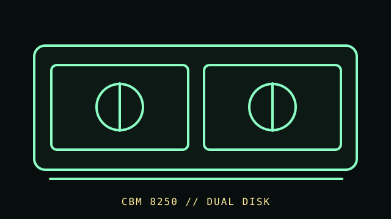

[ FLOPPY DRIVES // IDENTIFIED MODEL ]
Commodore 8250 Disk Drive
The Commodore 8250 is a dual-mechanism disk subsystem in the IEEE-488 Commodore peripheral line. It has its own controller and model-specific disk/host behavior; it is not an ordinary PC floppy drive.

MODEL IDENTIFICATION: Commodore 8250; capture nameplate, board/ROM revision, dual-drive configuration, connector, and any 8250LP suffix if present. This record keeps variant-dependent claims qualified; verify the physical unit and applicable manual before connecting, servicing, or formatting media.
Recorded specifications
| Catalog model | Commodore 8250 Disk Drive |
|---|---|
| Device type | External dual 5.25-inch drive subsystem with integrated controller |
| Interface / connector | IEEE-488 / GPIB host connection; host commands and disk formats are Commodore-specific. |
| Media / formats | 5.25-inch Commodore-format disks. Supported geometry, DOS, and capacity depend on 8250 revision and host software; no capacity is assigned without the matching format. |
| Revision caution | Match full model code, board/ROM/firmware revision, connector, cable, and documentation edition. Family-level ratings and host claims do not automatically apply to every unit. |
Host-controller and format compatibility
- Connect to a host with documented Commodore IEEE-488 support; do not treat as an IEC drive or a PC 34-pin mechanism.
- The standard 8250 and 8250LP/revision variants are not interchangeable assumptions; compare nameplate, controller board, and manual edition.
- Host software and disk format must support the 8250’s mode. The use of familiar 5.25-inch media does not establish 1541 or PC disk compatibility.
Preservation and safe cleaning
Unplug mains and bus cables before opening. Do not feed visibly damaged, moldy, or contaminated media into either mechanism. Use the 8250 service procedure for head cleaning and alignment; avoid touching heads or using solvents on disks.
For a disk acquisition, record the physical media label and condition, drive/model/revision, controller, host, software/firmware, settings, and any errors. Keep original media and raw captures/images unchanged; checksum verified copies and document conversions as derivatives.
Primary manuals & standards/archive references
- Commodore 8250 Dual Floppy Manual Addendum, Part 8250003 — Zimmers.netModel-specific addendum for the 8250 dual-drive system.
- Commodore Dual 5.25-inch Drive User Manual, Part 320899 — Zimmers.netPrimary operator documentation for the dual-drive product family.
- Commodore Disk Reference Manual (2031/4040/8050/8250) — Zimmers.netCommodore disk system reference; confirm the exact 8250 suffix.
Source scope is stated per link. Prefer the matching manufacturer manual and revision over family summaries. Capacities and recording modes are omitted when not supported for the exact model and format.